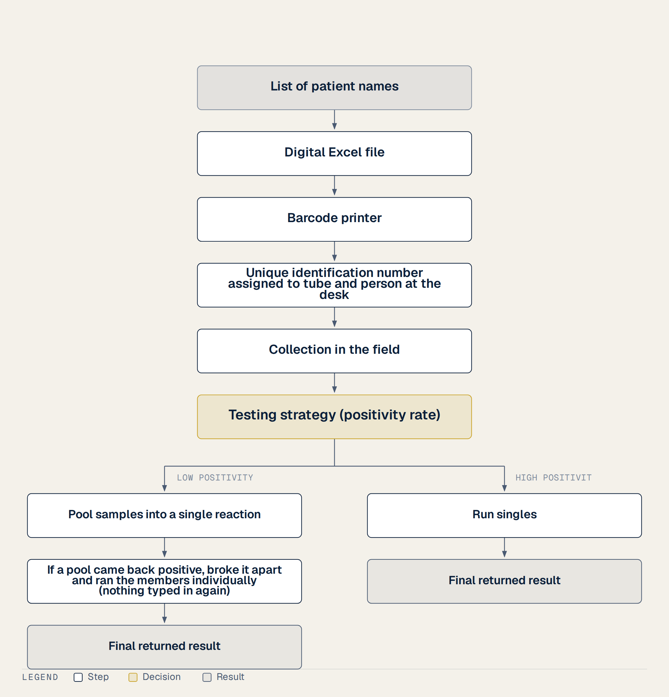
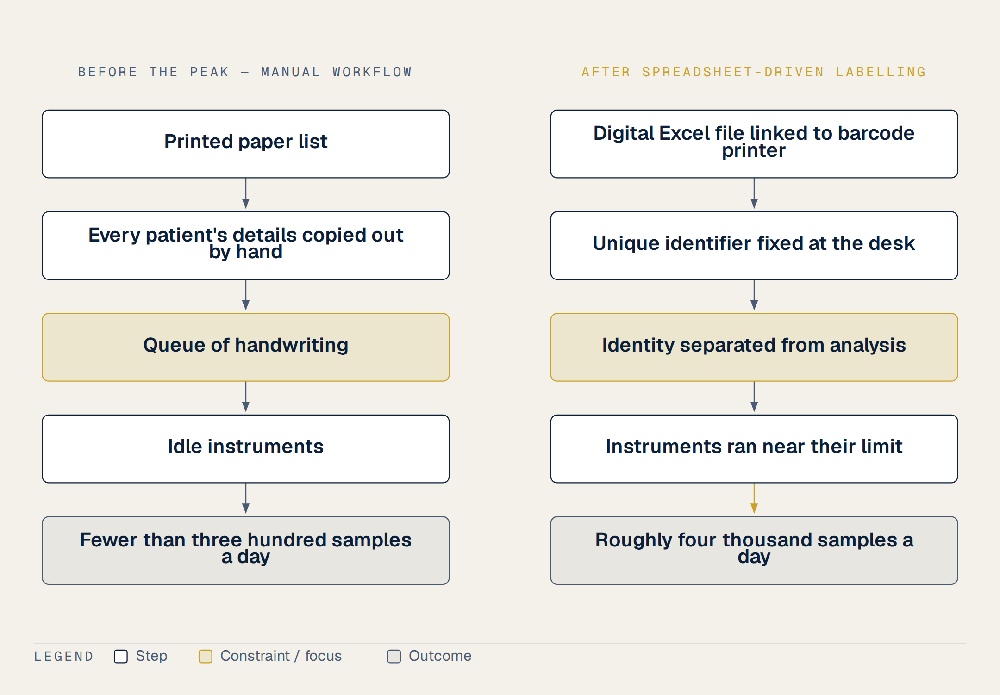

1 What Nobody Sees
I spent five years as a laboratory specialist inside a provincial CDC in Vietnam. I am writing this proposal now because I lived through these events myself. I do not write as an academic who studied these systems from a distance. I write from the physical memory of my own hands. To understand the proposal I am presenting, we must look closely at how the samples arrived in the second half of 2021.
The arrival of these specimens was the first critical step of our daily labor. The samples were collected in the field by health workers. Sometimes, I went out into the field to collect these samples myself. Other times, the district health centers gathered the specimens and sent them back to our central provincial facility.
Every single batch of these samples arrived at our laboratory inside cold boxes. We did not have specialized or uniform medical transport equipment. Instead, we had to rely on whatever cold boxes were available to the units at that moment. These cold boxes were transported to us by whatever means possible. Some came in an ambulance if the unit was fortunate enough to have one. If an ambulance was not available, the units carried the boxes in any vehicle they could find.
The specimens travelled in standard triple packaging: tubes of transport medium inside sealed bags, inside larger bags, inside the cold box.
This specific packaging protocol was passed down through a very clear chain of training. The Pasteur Institute first taught the protocol to the provincial CDC. The CDC then passed this training down to the frontline workers. From there, the frontline workers showed each other how to perform the collection and the packing.
The samples we received came from many different sources. Some were collected from quarantine facilities housing citizens who had returned from abroad. Others came from deep inside the local prisons. Some samples even came from the dead. Each of these different sources sent their specimens to our laboratory in the same types of packages.
Eventually, the sheer quantity of these incoming shipments became too much for our testing facility to hold. When the rising sample volume completely overwhelmed our laboratory space, we had no choice but to move the containers. The incoming cold boxes had to go out into the wide corridor. They lined the hallway in long rows.
This physical arrival of cold boxes, nested bags, and container tubes was our daily reality. By looking at how these samples arrived, we see the foundation of our work and the heavy responsibility of maintaining the trace. This is the background for the system I propose today.
The dangerous part of a pandemic is easy to picture: protective suits, negative pressure, live virus. That part was real. It was not where we lost the most.
The deepest bottleneck of the entire pandemic did not occur in a high-security bio-isolation unit. It was labelling, and labelling is not what the word suggests. The name makes it sound like fieldwork, something done in the heat of the moment under layers of gear.
The truth is much more mundane. We did the labelling before anyone ever went out to collect a single sample. We sat at wooden desks. We wore our everyday, ordinary clothes. No protective gowns were needed because there were no active samples in the room yet. The virus was not present. There was only a stack of blank sheets, a printer, and thousands of empty, clean container tubes.
These tubes contained only the transport medium. The medium was a sterile, red liquid waiting for a swab. Before those tubes could be sent out to hospitals, clinics, or quarantine camps, they had to be marked. Each tube needed a specific identity. So we sat there in our civilian clothes, matching lists on a computer screen to physical labels. We stuck the printed paper onto the cold plastic of the empty tubes.
It was silent, repetitive work. It was administrative. Yet, if a single mistake was made during this quiet desk task, the entire scientific apparatus downstream fell apart. A typo in a birth year or a misaligned barcode on an empty tube broke the link between a person and their tube. Some of those errors were caught later, when a clinician noticed that a name and a date of birth did not agree and sent the query back to us. Catching them cost time we did not have, and the ones nobody noticed became a person waiting at home for a result that could not be matched to them. The danger of a broken trace did not start with a sneeze or a cough. It started with a pen or a keyboard in a quiet office.
We were fighting a war of logistics with the tools of an office clerk.
By understanding that our greatest barrier was a paperwork bottleneck, we can see the true value of the solution I am proposing. Containment infrastructure does its own job and nothing here replaces it. This is a different gap. It sits upstream of the bench, and closing it costs far less. Fix the trace where it begins: secure the information on the desk before the tube ever meets the patient.
Today, as I write down this proposal, I want to describe the exact workflow we built because it holds the core of my entire idea.
Our daily work always began with a list of patient names. This collection list did not arrive in a formal or highly structured digital format. It usually came to us through a simple email or a common messaging app. We would open the message and print the raw list onto sheets of paper.
Then the slow, manual work began. I sat at my wooden desk and converted that printed paper list by hand into a digital Excel file. This was not a sophisticated program. It was just an ordinary spreadsheet, but we used it as our central database to organize the chaos.
We linked this Excel database directly to a barcode printer. That link was the whole of it. Through it, we assigned each patient a unique identification number. This unique ID did something very important. It tied the physical sample directly to the living person from the very start.
This connection remained solid throughout the entire lifecycle of the test. The ID bound the person to the sample from the moment of collection in the field. It stayed with the tube during processing inside our laboratory. It guided the data all the way through to the final returned result.
This was before the peak. We were doing wide screening, and the constraint was not the bench. It was the desk. Every patient’s details were copied out by hand, and that copying set the ceiling for the whole laboratory. We could move fewer than three hundred samples a day, and no part of that limit had anything to do with virology.
Once the spreadsheet drove the barcode printer, each person carried a unique identifier and each tube carried it too. The identity was fixed at the desk, before anyone went to the field. That one change lifted us to roughly four thousand samples a day. I want to be exact about why, because the obvious reading is wrong. A label printer does not make a thermocycler faster.
What it did was separate identity from analysis. With identifiers already assigned, we could pool samples into a single reaction and the record still held the list of who was in that pool, without anyone writing names on a worksheet. If a pool came back positive we broke it apart and ran the members individually, and nothing had to be typed in again. When positivity was low we pooled more. When it rose we pooled less, or ran singles. The testing strategy could change in a morning and the paperwork did not have to be rebuilt to follow it.

At four thousand a day we were close to what our instruments could do. That is the honest ceiling, and it is the answer to the obvious objection. Removing the copying did not raise the analytical capacity of the laboratory by a factor of thirteen. It let us reach the capacity we already had. Before, the machines were idle behind a queue of handwriting. Afterwards they ran near their limit.

The identifiers did something else that mattered more than speed. We could attach whatever fields we wanted to a record and check them against each other, so a wrong birth year or a swapped tube had several chances to be caught rather than none. Speed was the visible gain. Fewer misidentified samples was the one that mattered.
I built it in a spreadsheet. Nobody procured anything. There was no vendor to wait for, so when the situation changed I changed it that same day, and there was no new budget line and no new staff. I want to be clear that this is not a story about my cleverness. It is a story about how low the barrier already was in 2021, and it is lower now. The same thing today could be assembled far faster than I assembled it. The principle has not changed at all.
We did not hire any new staff. We had the exact same team of laboratory workers. We did not receive any new budget line to make this happen. The process was cheap, and it was entirely ours. It worked so well that the exact same process still runs at Vinh Long CDC today. It has survived because it fits the daily reality of a provincial laboratory.
When I look back on those hard days, I see a clear truth. I realized that our problem was never really about speed. We did not need to run faster. We did not need to work ourselves to exhaustion.
The real problem was the trace. The trace is the thread that connects a person to their sample. If you cannot guarantee that trace, speed is meaningless. It does not matter how many thousands of tests you run if you lose the connection between the person and the tube. The ID we created was not just a label. It was the physical anchor of that trace. It was the system that held our memory.
During those years, I watched my colleagues walk away. They did not leave because they hated the science. They left because they could not afford to stay. In the provincial public health system, the hardest people to retain are always the preventive medicine staff. I lived this reality every single day, and the numbers in the literature match exactly what I felt on the laboratory floor.
To understand why we lose these people, you have to look at how medical professionals make a living in Vietnam. A clinical doctor or nurse working in a hospital has an escape hatch. When their official shift ends, they can go to work at a private clinic. They can open their own practice or consult for private facilities. They have a source of private practice side income. But we do not have that option. A preventive medicine specialist cannot open a private clinic in the evening to track epidemics or test water quality. There is no private market for tracking diseases. Dieleman and colleagues documented this reality back in 2003. They found that the low salary and allowances at the commune and district levels were the main factors that destroyed motivation. Specifically, they noted that preventive medicine staff are the hardest to keep precisely because they lack the private practice income that clinical staff rely on (1).
The financial strain is not just a complaint. It is a documented barrier. In 2013, Tran and his co-authors studied health worker satisfaction at the commune level in Vietnam. Their findings were stark. Only 24.0 percent of the workers they surveyed were satisfied with their salary and allowances, which is to say nearly three quarters were not. The dissatisfaction went deeper than just the monthly envelope. Only 25.1 percent of those workers felt satisfied with their overall benefits. When it came to the physical tools of the trade, only 35.7 percent were satisfied with the available equipment. Even the working environment itself only managed a 41.8 percent satisfaction rate (2).
I remember sitting in our administrative room, looking at my colleagues, and knowing these percentages were real. We worked with outdated machines and struggled to find basic supplies. Our base pay was low, and there were no evening consultations to make up the difference. When you live on those margins, every month is a quiet struggle. This is why we are writing this proposal. We cannot simply expect people to stay out of pure devotion. The data has shown for decades that the lack of private practice income and the dismal satisfaction with salary, benefits, and equipment are draining our provincial teams of their best talent. If we want to secure our health system, we must address the invisibility of this work and build a career path that keeps these specialists from walking out the door.
What we lost was not equipment. It was people. After the extreme strain of 2021, we desperately hoped for a period of stability. Instead, we experienced a quiet, massive departure. What happened next was a crisis of retention that changed the landscape of public health across our entire country.
The Ministry of Health counted 9,680 health staff who resigned or walked out between the first of January 2021 and the thirtieth of June 2022. The breakdown runs: 3,094 doctors, 2,874 nurses, 551 laboratory technicians, 276 midwives, 593 pharmacists, and 2,280 other public employees. Eight thousand eight hundred and ten of them worked under provincial health departments rather than for the ministry directly, which is to say they were the people furthest from Hanoi. The ministry listed four causes. The second was pay, and it named where the pay is worst: salaries and allowances in the public system are low, it said, and lowest of all at preventive medicine and grassroots facilities. That is the ministry describing the problem this book is about, in its own words, in 2022. These departures were not evenly distributed throughout our provinces. Instead, they were heavily concentrated in our largest urban areas where the pressure had been highest. Ho Chi Minh City alone lost 2,035 health workers during this period. Hanoi, our capital, lost 1,032. Even in our provincial laboratories, the vacuum was completely real. When colleagues left, their empty desks meant more night shifts and more exhausting work for those of us who stayed behind (3–5).
The government recognized this severe crisis and tried to respond. They chose the most direct tool they had available. In early 2023, they issued Decree 05/2023. This decree raised the occupational allowance to 100 percent for preventive health and grassroots medical staff. For a brief moment, it felt like our struggle was finally recognized. Our monthly income went up, and we hoped this financial support would help stabilize our depleted workforce (6).
However, this intervention had a significant catch that destroyed its long-term impact. The 100 percent allowance was not a permanent wage reform. The decree only applied this increased rate temporarily for the period from January 1, 2022, to December 31, 2023. Starting on January 1, 2024, the occupational allowance reverted back to the old, much lower levels set by the earlier Decree 56/2011. Money was tried here as a solution, but it was tried temporarily, and it did not hold people (6).
This temporary measure proved exactly what many of us knew from our daily lives. Financial incentives alone are not enough to retain staff when they are applied in isolation. It was a brief bandage on a deep, structural problem. It did not create a predictable career pathway, nor did it make our daily field labor visible. When the temporary allowance expired in 2024, the extra financial support vanished, and the old sense of professional invisibility returned. My colleagues did not just want a short-term cash injection to endure burnout. They wanted a sustainable professional future where their verified work is recognized. This is why we need a new approach, because temporary money has already failed to keep our specialists from leaving (6).
Many colleagues pack their bags and leave. When people talk about solving this retention crisis, they almost always point to money. They demand larger bonuses, higher allowances, or direct pay-for-performance schemes. As someone who lived on a low public salary, I understand this demand. Money is not wrong. For underpaid staff in developing countries, salary is not merely a hygiene factor that we can ignore. It is a matter of basic survival. However, if we look closely at the global evidence on health worker retention, we find an honest and far more complicated picture.
The scientific evidence on using financial incentives to retain health staff is surprisingly thin and inconsistent. Consider the 2021 Cochrane systematic review by Diaconu and colleagues. They analyzed pay-for-performance schemes in low and middle-income countries. They found that these financial programs produced inconsistent effects, and they graded the certainty of this evidence as low to very low. Even the World Health Organization is remarkably candid about the limitations of its own guidelines. In its official recommendations on retaining health workers in remote and rural areas, the WHO states that almost all of its retention recommendations rest on low or very low certainty evidence. This low grading is due to research design limitations, rather than proof that the interventions do not work. For instance, their recommendation on providing social recognition for rural health workers is graded as strong, yet the evidence backing it is rated as very low certainty (7–9).
We must look at how health workers make choices when they are asked directly. Discrete choice experiments allow us to see what staff value. In Timor-Leste, a study by Rockers and colleagues in 2016 surveyed over four hundred workers. They found that professional skills upgrading and specialization actually ranked above wages as the number one preference. In Lao PDR, a 2013 study by Miyazaki and colleagues found a slightly different mix. There, salary alongside secure tenure and promotion dominated the preferences of health workers. These studies suggest that career pathways often matter as much as, or even more than, direct cash. But we must attach a vital caveat to these findings. These are discrete choice experiments. They measure stated preferences on a survey, which does not always predict actual human behavior in real life (10,11).
We do not have randomized controlled trials comparing scholarships directly to cash rewards for frontline staff. What we do have is a clear pattern. Financial incentives alone are the weakest tool when applied in isolation. That is not an argument that pay does not matter. The Tran survey and the ministry’s own attrition report both say plainly that it does, and a technician who cannot cover rent will leave no matter what certificate we hand them. A living wage is a precondition here, not an alternative. What the evidence suggests is that money paid once, during an emergency, buys presence for the length of the payment and nothing after it. The question this book takes up is what to build alongside the wage so that the years a technician spends at the bench leave something behind that belongs to them (2,5).
The foundation of global policy rests on the World Health Organization’s 2010 global policy recommendations on retention in remote and rural areas and the 2021 guideline that replaced them. Both of these landmark documents are organized around four core pillars: education, regulation, financial incentives, and personal and professional support. Both guidelines explicitly state that coordinated, bundled packages of interventions beat single, isolated ones, and both conclude that relying on financial incentives alone is the weakest standalone bet available. The certainty caveat noted above applies to this conclusion as much as to any other in the set (8,12).
The Cochrane review conducted by Grobler and colleagues in 2015, registered as CD005314.pub3, evaluated the global literature and reached the exact same conclusion, finding very low certainty evidence for every single intervention type. We simply do not have high-quality trials to tell us what works with statistical confidence. When we look for the most cited paper in this entire field, we find the 2008 systematic review by Willis-Shattuck and colleagues published in BMC Health Services Research, volume 8, article 247. Their classic analysis also found that financial incentives alone are insufficient to keep health workers at their posts. Instead, they identified recognition, career development, and management and supervision quality as the powerful, recurring themes that drive retention. However, we must remain completely honest about the nature of this classic study. It is a descriptive synthesis of the existing literature with no pooled effect sizes, meaning we cannot extract a single, unified mathematical impact from their work (7,13,14).
In our provincial laboratories, we have spent years acting as if salary bonuses are the only tool we have. But the evidence shows that professional recognition and a clear career pathway are the real missing links. By building a verified record of service, we are not trying to replace salary with symbolic gestures. Rather, we are addressing the exact non-financial motivators that the global literature has highlighted for decades. If we want our technicians to stay, we must make their invisible labor visible.
During the heights of 2021, I saw firsthand what a massive surge of international and national resources could achieve. For a brief period, laboratories across our country that had never coordinated before suddenly found themselves speaking a common, unified language. We were running comparable assays, reporting our diagnostic findings on comparable timelines, and connected to epidemiological networks that had not existed even a year before. This systemic interoperability was very real. It was incredibly expensive to establish, and we built all of it in a frantic hurry.
But nothing about this newly constructed infrastructure was permanent. An institution is an open system, not a sealed vault. A laboratory capability persists only while budget, staffing, public attention, and routine drills keep actively flowing into it. When that flow stops, the capability degrades. This is not a law of physics, and I do not want to dress it up as one. It is an ordinary administrative fact.
Our field already has a well-established name for this frustrating, repeating pattern. We call it the cycle of panic and neglect. The Global Preparedness Monitoring Board described this exact loop in 2019 as a process of ramping up national efforts when a threat is serious, only to quickly forget them once the danger subsides. Two years earlier, in 2017, the World Bank argued that pandemic preparedness must become a permanent, standing budget line rather than a series of emergency appropriations (3,4,15).
This neglect phase is not a distant forecast. It is measurable, and it is running right now. Global development assistance for health has fallen from roughly eighty billion dollars at its 2021 peak to about thirty-nine billion dollars in 2025. This is the lowest level of international funding in fifteen years, and it is forecast to fall even further. Meanwhile, the Pandemic Fund has awarded only about one and a half billion dollars in grants across three years. This stands against an estimated annual need of ten and a half billion dollars. Even the international pandemic agreement adopted in 2025 is still not in force because its technical annex missed its critical deadline (4,16).
We see the decay of these systems every day in our local units. The physical machines are still on our benches, but the software updates have stopped, and the trained technicians are leaving for other jobs. Notice which parts survived and which did not. The spreadsheet workflow cost nothing and belonged to us, and it is still running. The donor-funded sequencing network cost a great deal and belonged to a grant cycle, and it is going quiet. Cheap and locally owned outlives expensive and externally owned. That is the pattern this proposal tries to sit inside, not an argument that a record can replace a budget.
I want to be exact about what attaching a name to a serial number does and does not do, because the claim is easy to overstate. It buys no reagents. It funds no service contract, patches no software, and pays nobody’s salary. When the money stops, the machine still stops. What the record changes is narrower: it means that when a technician leaves, the demonstrated competence leaves with a document rather than with nothing, and that a laboratory rebuilding after a funding gap can find people who have provably done the work before. That is a retention and re-entry argument, not a financing one. Financing is somebody else’s chapter.
The work we did vanished into aggregate administrative files. When we look closely, we find that the cycle of panic and neglect is not just a distant global pattern. It is a measurable, running reality in our own national backyard. This same problem of human invisibility repeats itself at a national scale in the Vietnamese preventive medicine budget.
In 2008, the National Assembly resolved that at least thirty percent of the state health budget must be dedicated to preventive medicine. This was a legally binding commitment, and later party resolutions repeated it. Fourteen years on, the delegation charged with checking that commitment reported what the money had actually done. Across forty one provinces and cities, the preventive share was twenty point four percent in 2012. In 2017 it was twenty two point four nine percent. In 2022 it was twenty four point four one percent. The direction is upward. The target was never reached. At roughly four tenths of a percentage point a year, the gap left in 2022 would take another fourteen years to close, which would put the country at a target it set for itself in 2008 somewhere around 2036. That last figure is my own arithmetic on three published points, not a government projection, and the reported figures are drawn from spending on grassroots health in forty one provinces, out of the sixty three that existed when the review was done, so they are not strictly the same denominator the resolution names. (17–19)
Nobody broke a law here. There is no villain in this story, no scandal, no diverted money. There is a promise a country made to itself, in writing, and a system moving toward it so slowly that a technician who started work the year the resolution passed would retire before it arrived.
The more revealing problem is that the delegation could not settle on the number at all. Its own chair raised two objections in the same breath. She questioned what should even count as preventive spending, and she noted that the provinces report the ratio differently from one another. She asked the Ministry of Health for a more specific report so that the delegation would have something solid enough to write into its findings. The body with the constitutional authority to audit the government could not establish, to its own satisfaction, how much the government spends on preventing epidemics. Not because anyone hid it. Because the work was never recorded in a form that survives the trip from a district health centre to a national ledger. (19,20)
Then the ledger itself moved. On the twelfth of June 2025, Vietnam reduced its provincial administrations from sixty three to thirty four: twenty eight provinces and six cities. Nineteen provinces and four cities were formed by merger; eleven were left alone. This was the largest administrative consolidation in decades, and it was carried out for sound reasons that have nothing to do with this book. But consider what it means for a record. Two provincial health systems become one. Two sets of registers, two numbering conventions, two server rooms, two ways of deciding what counts as preventive spending, are pushed together into a single new authority with a new name. Every institutional archive in the country was rewritten in the same season. (21)
Institutions survive that kind of change. They have lawyers and letterheads and successor authorities. A technician does not. When the office that employed her for nine years ceases to exist, the evidence of what she did lives wherever her old supervisor filed it, in a building that now answers to a different province. She cannot subpoena her own past. This is the sharpest argument I can make for a record that belongs to the worker and travels with her. Reorganisations are not rare accidents. They are a normal feature of a functioning state, and they will happen again. A career should not have to survive them by luck.
The honest thing to write here is that the number is simply not published. I will not guess at it or estimate it, because the absence of the data is itself the more useful finding. A national system that cannot say how much it spent on prevention is a system in which prevention work is not recorded in a form that anyone can check. These are not the same problem. Fiscal classification is a matter of accounting standards; a technician’s missing logbook is not. But they rhyme, and they rhyme for the same reason: in both cases the work was done and the record of it was never built to travel. In our laboratory, a technician’s labor was real, but because it was never recorded in their name, it remained invisible. At the national level, the failure of our accounting system produces the exact same result. The preventive work of our clinics and laboratories is real, but the record of it is not. If we cannot track the money we promised to spend, we cannot hope to track the pathogens we are trying to stop.